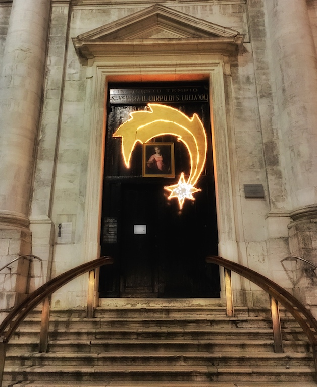

Photo by Francesca Tosolini
According to UNESCO, more than half of the world's historical and artistic heritage can be found in Italy. In Italy art is everywhere: in small towns, castles, villas, cathedrals and of course museums and churches. Many Italian churches can indeed be considered historical monuments and, because of that, they are expensive to maintain and to restore. Nowadays more and more churches require the payment of a ticket to visit them. Investigate about which churches fall into this category, since you may be able to buy the tickets online beforehand and skip the, sometimes long, line. {This is an excerpt from chapter 7 “Churches and Museums” of the eBook “Italy from the Inside. A native Italian reveals the secrets of traveling in Italy”}